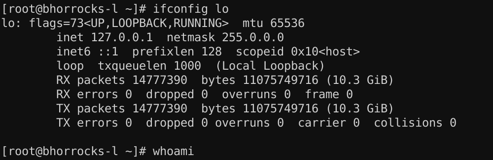

v.1.0
The OSCP Exam penetration test report contains all efforts that were conducted in order to pass the Offensive Security course. This report should contain all items that were used to pass the overall exam. This report will be graded from a standpoint of correctness and fullness to all aspects of the exam. The purpose of this report is to ensure that the student has a full understanding of penetration testing methodologies as well as the technical knowledge to pass the qualifications for the Offensive Security Certified Professional.
The objective of this assessment is to perform an internal penetration test against the Offensive Security Exam network. The student is tasked with following methodical approach in obtaining access to the objective goals. This test should simulate an actual penetration test and how you would start from beginning to end, including the overall report. An example page has already been created for you at the latter portions of this document that should give you ample information on what is expected to pass this course. Use the sample report as a guideline to get you through the reporting.
The student will be required to fill out this penetration testing report fully and to include the following sections:
FIRST_NAME LAST_NAME was tasked with performing an internal penetration test towards Offensive Security's Exam Network. An internal penetration test is a dedicated attack against internally connected systems. The focus of this test is to perform attacks, similar to those of a hacker and attempt to infiltrate Offensive Security's Exam Network. FIRST_NAME's overall objective was to evaluate the network, identify systems, and exploit flaws while reporting the findings back to Offensive Security.
When performing the internal penetration test, there were several alarming vulnerabilities that were identified on Offensive Security's network. When performing the attacks, FIRST_NAME was able to gain access to multiple machines, primarily due to outdated patches and poor security configurations. During the testing, FIRST_NAME had administrative level access to multiple systems. All systems were successfully exploited and access granted. These systems as well as a brief description on how access was obtained are listed below:
FIRST_NAME recommends patching the vulnerabilities identified during the testing to ensure that an attacker cannot exploit these systems in the future. One thing to remember is that these systems require frequent patching and once patched, should remain on a regular patch program to protect additional vulnerabilities that are discovered at a later date.
FIRST_NAME utilized a widely adopted approach to performing penetration testing that is effective in testing how well the Offensive Security Exam environments are secure. Below is a breakout of how FIRST_NAME was able to identify and exploit the variety of systems and includes all individual vulnerabilities found.
The information gathering portion of a penetration test focuses on identifying the scope of the penetration test. During this penetration test, FIRST_NAME was tasked with exploiting the exam network. The specific IP addresses were:
Each host was initially scanned with the nmap wrapper fist_fight
#! /bin/bash
fist_fight scope_ips
The service enumeration portion of a penetration test focuses on gathering information about what services are alive on a system or systems. This is valuable for an attacker as it provides detailed information on potential attack vectors into a system. Understanding what applications are running on the system gives an attacker needed information before performing the actual penetration test. In some cases, some ports may not be listed. to be replaced
I can haz root!!
ssh root@127.0.0.1

Generated Wed Nov 15 10:22:35 MST 2017